Quelques prix et distinctions
¬ Sélectionnée pour représenter la France, en compagnie des designers Blandine Leroudier/Éric Jourdan et Pascaline de Glo de Besses, dans l'exposition « World Wide Things » au festival Designmonat Graz du 11 mai au 9 juin 2019.
¬ Lauréate du Grand Prix Stratégies de la Production Publicitaire 2016 pour la bOx of Life.
¬ Dans la sélection du magazine Intramuros pour l'exposition « Type is Sexy », Biennale Internationale Design 2015.
¬ Exposée dans « Design map, designers créateurs de valeurs pour l’entreprise » pour y présenter la collection des bOx , Cité du design, du 6 juin 2014 au 4 janvier 2015.
¬ Blonde Art Books Tour 2013, participation à la tournée estivale à travers les États-Unis qui invite à la découverte de projets artistiques menés par des maisons d'édition internationales parmi les plus singulières.
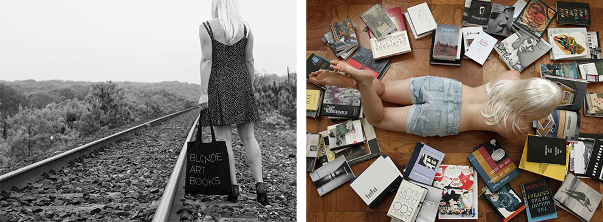
¬ Distinguée par le réseau Cities of design/UNESCO sous l'égide de la Cité du design, pour la bOx in Black dans la manifestation « C.O.D.E » Cities Of DEsign/UNESCO novembre 2013
[ Évènement C.O.D.E remise de la distinction par Josyane Franc. Remise du Grand Prix Stratégies de la Production Publicitaire ]
¬ Lauréate du prix de la Nuit du livre catégorie « Références », 2008.
¬ Lauréate du trophée Intergraphic 2008, pour 363 000 signes.
¬ Lauréate du prix Lacoste catégorie « Beaux livres », 2004, pour Au bonheur des filles.
¬ Lauréate du prix Jules-Janin 2000, pour Le pays des matins bleus.
¬ Lauréate du prix Eurograhic press 1992, pour L’entrée des croisées à Constantinople.
¬ Lauréate du prix Vasari international de l’édition d’art 1991, pour la revue Noise.
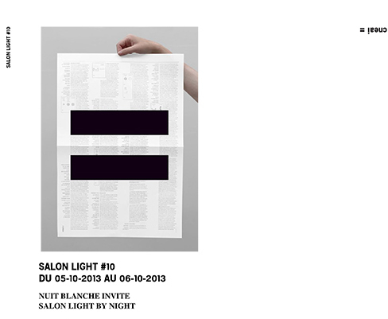
Parmi les artistes et auteurs publiés
Jean-Michel Alberola, Txomin Badiola, Jean-Christophe Bailly, Miquel Barceló, Jacquie Barral, Jacques Barry, Jean-Luc Bayard, Lionel Bayol-Thémines, Didier Ben Loulou, Jean-Pierre Bertrand, Jean-Sylvain Bieth, Wafaa Bilal, Jean-Noël Blanc, Christian Boltanski, Pascale Bouhénic, Stéphane Bouquet, Pierre Buraglio, Tracey Bush, Michel Butor, Sophie Calle, Nancy Campbell, Jean-Marc Cerino, César, Franck Chalendard, CharlElie, Georges-Olivier Châteaureynaud, Noëlle Châtelet, Éric Chevillard, Thomas A. Clark, Bernard Collet, Robert Combas, Patrick Corillon, Éric Darragon, Anne Delassus, Marie Denis, Monique Deregibus, Erik Dietman, John Dilnot, Helen Douglas, Kerry Downey, Jimmie Durham, Bruna Esposito, Yann Fabès, Tessa Farmer, Philippe Favier, Federico Ferrari, Ian Hamilton Finlay, Forced Entertainment, Paul Fournel, Federico Fusi, Futureflair, Christian Garcin, Ludger Gerdes, Jochen Gerz, Paul-Armand Gette, Marithé et François Girbaud, Michelle Grangaud, Matt Green, Peter Greenaway, Raphaëlle de Groot, Marie-Ange Guilleminot, Franck Herbet-Pain, Susan Hiller, Éric Holder, Fabrice Hybert, Anne Immelé, Wang Jiuliang, Jacques Jouet, Isaac Julien, Sharon Kivland, Georges Kolebka, Joan La Barbara, Anne Lacaton, Philippe Lacoue-Labarthe, Jean Le Gac, Sol LeWitt, Marie Lorenz, Matt Lumby, Pierre Madaule, Tomás Maia, Chris Marker, François Martin, Jean-Patrick Maslier, Keiichi Matsuda, Ramuntcho Matta, Julian Maynard Smith & Station House Opera, Abdelwahab Meddeb, Alexis Meilland, Charles Melman, Daniel Mesguich, Annette Messager, Christian Milovanoff, Mihael Milunovic, Robert Morris, Stuart Mugridge, Jean-Louis Murat, Guillem Nadal, Jean-Luc Nancy, Paula Naughton, Federico Nicolao, Jutta Nitschke, Roman Opalka, Jean-Michel Othoniel, Patrick Othoniel, Bernard Pagès, Riccardo Panattoni, Claudio Parmiggiani, Alexis Pelletier, Pierre Pinoncelli, Vettor Pisani, Anne et Patrick Poirier, Sunita Prasad, Richard Price, Wu Qi, Bernard Rancillac, Sophie Ristelhueber, Jacques Roubaud, Sonia Rykiel, Sans façon, Sarkis, Saschienne, Gianluca Solla, Ettore Spalletti, SP Weather, Swoon, Finlay Taylor, Agnès Thurnauer, David Tremlett, the Underbelly Project, Nils-Udo, Jasper Van den Brink, Bernar Venet, Claude Viallat, Dai Xiang, Carmelo Zagari…
Cliquez pour lire quelques-unes des correspondances
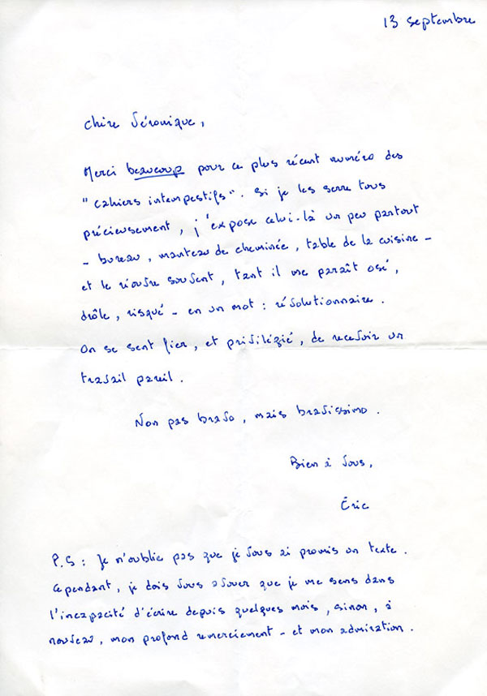
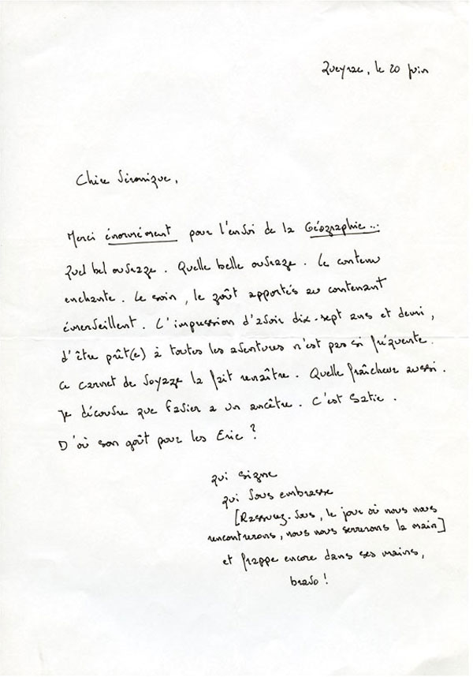
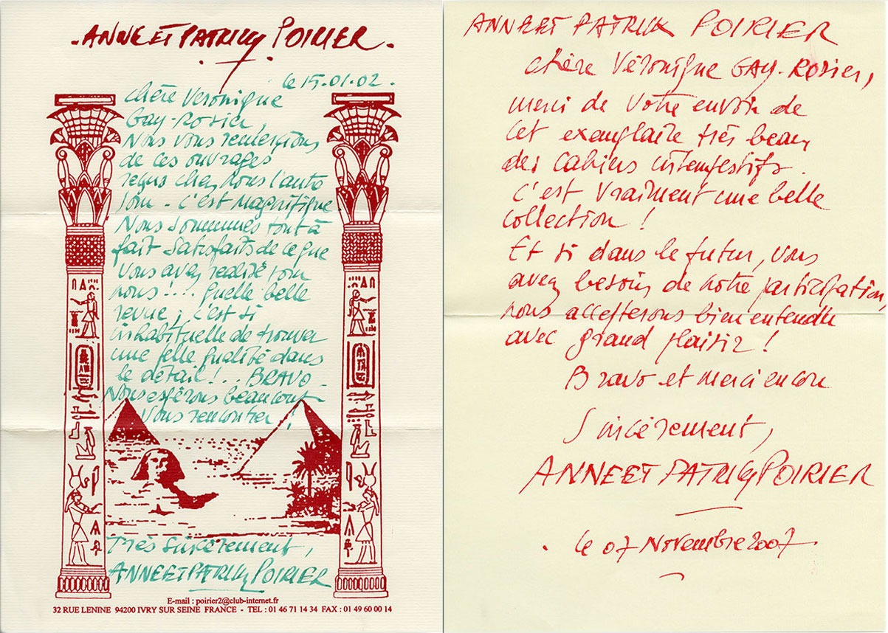
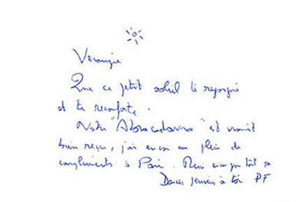
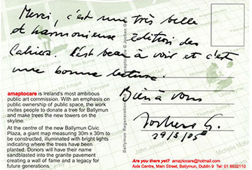
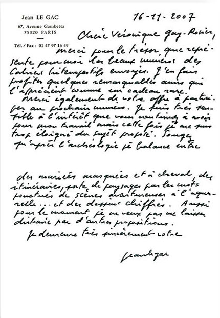
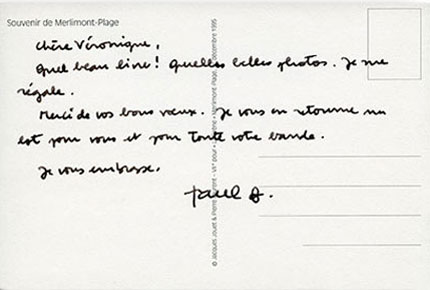
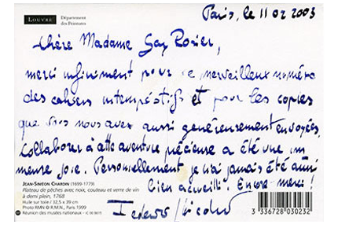
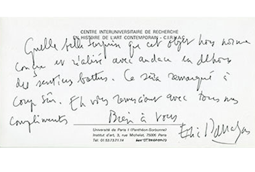
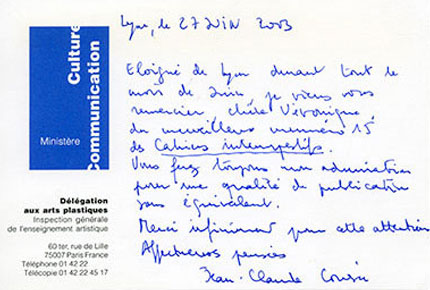
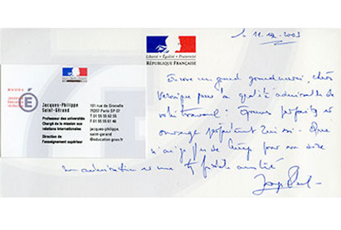
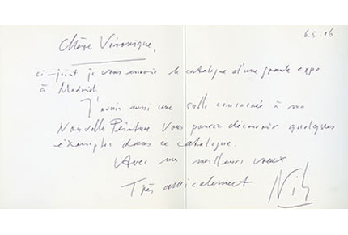
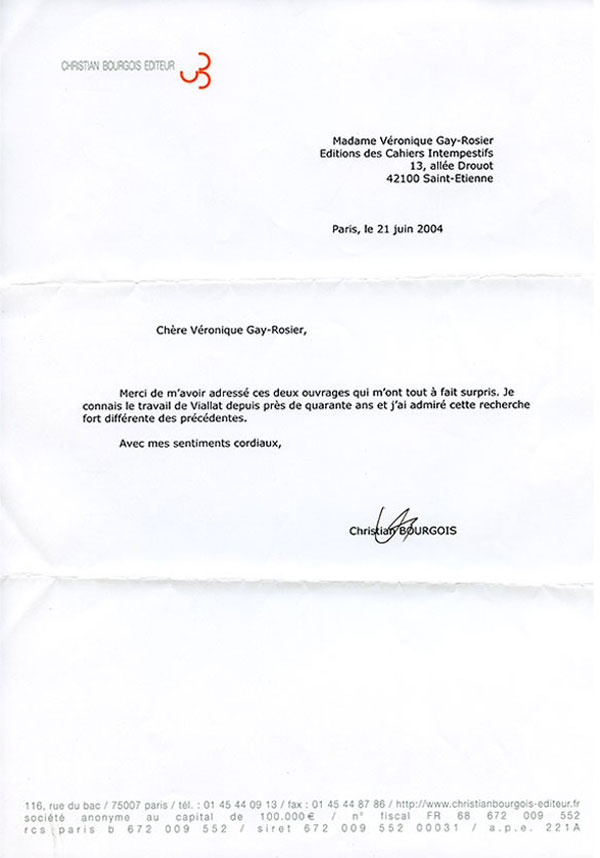
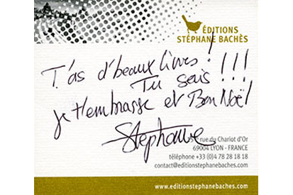
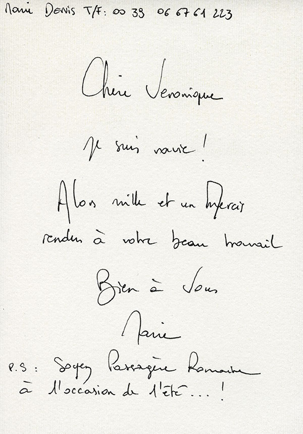
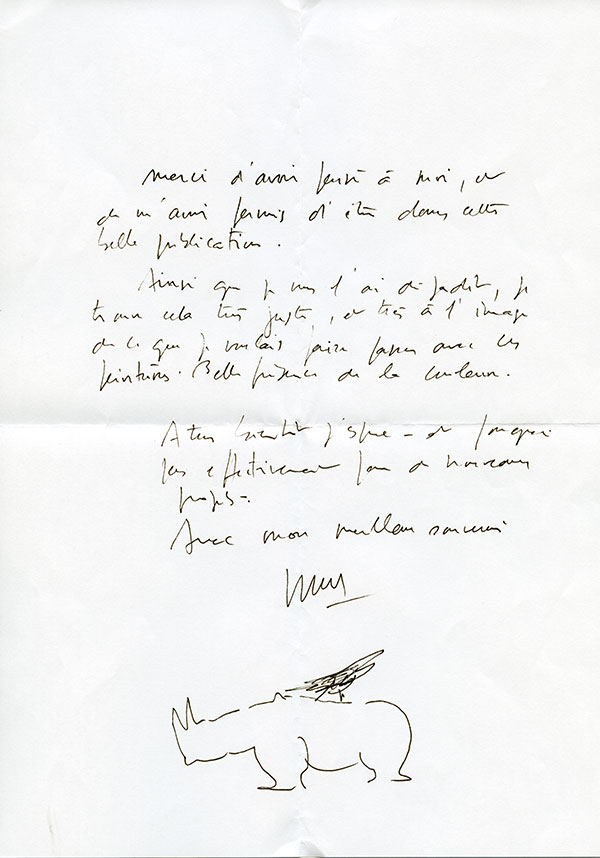
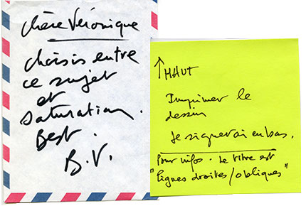
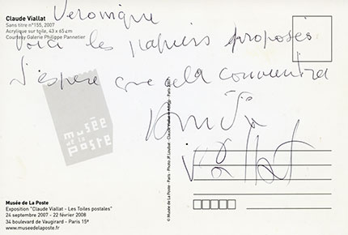
Contribution de Sol LeWitt aux Cahiers intempestifs #4 [télécopie du 15 mars 1995]
La presse en parle
¬ Il est rare que les livres aient une telle originalité formelle, un tel caractère affirmé dans le choix du papier, du format, de la mise en scène. Ces variations artistiques sur la typographie ne sont pas plus esthétisantes que le précédent volume. Les textes des écrivains sont passionnants, à l'instar de celui de Paul Fournel sur la rencontre entre Nicolas Jenson, le maître de la monnaie à Tours, et Johannes Gutenberg l’imprimeur de Mayence. Ou le dialogue amoureux de Jacques Claude à propos de l’Helvetica, symptôme de la modernité urbaine.
JDD [ Des hommes de caractères 2, décembre 2015 ]
¬ Cette revue d’art, qui choisit de montrer des œuvres, avec un respect rare, sur papier velin et sous emboîtage en plexiglas, plutôt que de les commenter, invite ici à découvrir des créations originales, joueuses et séduisantes, « made in Britain », pour reprendre le titre de cette livraison, initiées, appuyées, par le Centre for Fine Print Research de Bristol, qui se consacre notamment au développement du livre d’artiste. La modernité ici sourit.
Le Monde diplomatique [ Cahiers intempestifs, Made in Britain, n° 25 & 26 juin 2011 ]
¬ Tout est beauté précieuse (le papier, la typo, la qualité de l’impression, les œuvres et les photos reproduites) dans ce numéro d’une revue normalement consacrée à l’art et à l’esthétique, laissant entendre ici, sous la baguette de Jean-Luc Nancy, une « voix politique » inquiète, après l’élection présidentielle 2002. Contributions de Jean-Christophe Bailly, Philippe Lacoue-Labarthe, Miquel Barceló, Claudio Parmiggiani, Robert Morris.
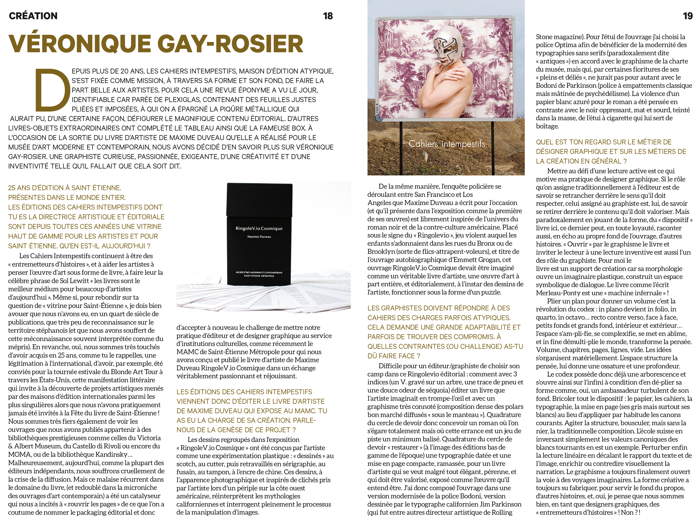
Téléchargez l'article de L'agenda n°553 [Janvier 2019]
¬ Caractère décembre 2017, n°747, page 106 « Bonnes feuilles : Codex : nouvelles de la page, éditions des Cahiers intempestifs ».
¬ France Culture novembre 2014, Des hommes de caractères – Volume 2.
¬ Caractère avril 2013, n° 696, page 69 « Bonnes feuilles : Des hommes de caractères, éditions des Cahiers intempestifs ».
¬ Tank, la revue de toutes les communications avril 2013, pages 60–67, «l’art du papier : la Paper Toy Box et le Gunnies’project, éditions des Cahiers intempestifs».
¬ Les points sous les i revue bibliographique des librairies initiales, janvier 2013, page 23, « Hermitage selon Chave, les Cahiers intempestifs, collection Les petits Cahiers intempestifs du vin ».
¬ Le Monde diplomatique décembre 2012, n° 705, « Caractères, fontes et casses ».
¬ The Glam Attitude novembre 2012, « Les (très beaux) Cahiers intempestifs ».
¬ Le Monde diplomatique juin 201, « Cahiers intempestifs ».
¬ Livre et lire octobre 2010, n° 255, « Les Cahiers intempestifs n° 25, So british ».
¬ Livre et lire juin 2009, « Viallat toujours intempestif : Claude Viallat inaugure une collection de livres d’artiste aux éditions des Cahiers intempestifs ».
¬ France Graphique septembre 2009, « Le papier prépare ses stratégies de défense, interview avec Véronique Gay-Rosier, directrice de collection des Cahiers intempestifs ».
¬ Libération 20 février 2003, « Cahiers intempestifs : la voix politique ».
¬ L’express avril 2001, n° 2598, « Les 100 qui font bouger Saint-Étienne : littérature édition, Véronique Gay-Rosier et les Cahiers intempestifs ».
¬ Livre et lire mai 200, n°164, « Éditions des Cahiers intempestifs, à contretemps ».
¬ Beaux Arts magazine octobre 1997, « Cahiers intempestifs ».
¬ Livres de France décembre 1995, n°180,« Cahiers intempestifs ».
¬ Plumart « 10 ans de Cahiers intempestifs – avec carte blanche à Jean-Luc Nancy pour le n°15 ».
¬ Art Press novembre 1995, « Cahiers intempestifs 4 ».
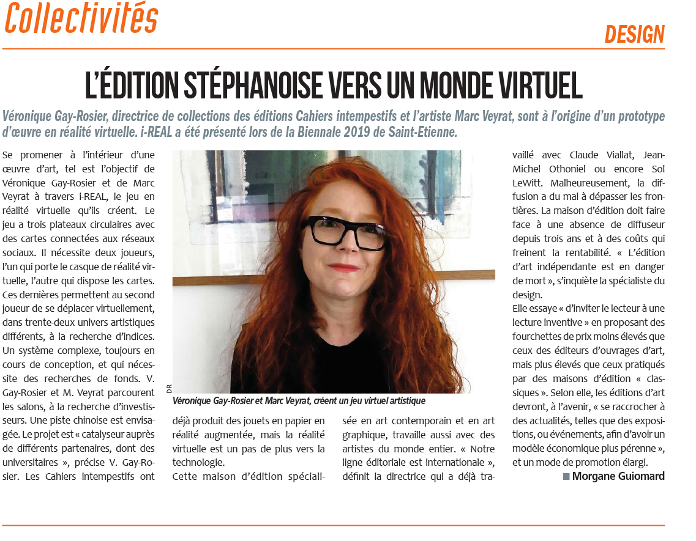
Téléchargez l'article de L'Essor n° 3787 [Juin 2019]
Téléchargez l'article du JDD [2015] détail
Téléchargez l'article du JDD [2015]
Téléchargez l'article d'Étapes [2014]
Téléchargez l'article du Monde diplomatique [2012]
Téléchargez l'article du Monde diplomatique [2011]
Téléchargez l'article de Libération [2003]
Publication en tant qu'auteur
¬ « De l’arbre au labyrinthe » ou comment les bifurcations imaginaires favorisent l’émergence de nouvelles formes d’écriture[ télécharger le texte ]
¬ « Entremetteur d’histoires » in Texte et Image 5 Les Fabriques des histoires, Éditions de l'université Savoie-Mont-Blanc, 2019.
Entremetteur d’histoires
Les histoires sur le livre sont bien trop souvent celles qui n’évoquent que l’aventure de son contenu. Le livre cette unité intellectuelle selon Kant. Un titre et un auteur voici le livre. Mais qu’en est-il de sa forme sensible ? N’est-elle pas, elle aussi, une fabrique des histoires ?
Si l’émergence de ce qui, dans le sillage d’Edward Ruscha, fut appelé livre d’artiste mit enfin sur la sellette la matérialité du livre comme supportant, prenant en charge, l’œuvre d’art – « les livres sont le meilleur médium pour beaucoup d’artistes d’aujourd’hui » – c’est le débat stérile numérique versus papier qui obligea, de par la tenace persistance du codex dans l’ère électronique, à assimiler sa géographie à une véritable machine de guerre et à reconnaître sa morphologie elle-même comme catalyseur de sens, son gabarit comme faiseur d’histoires.
À la fois éditeur et designer graphique, je me suis toujours, en effet, considérée comme un entremetteur d’histoires. Mettre au défi d’une lecture active est ce qui motive ma pratique. Le rôle qu’on assigne traditionnellement à l’éditeur est pourtant de savoir se retrancher derrière le sens qu’il doit respecter, celui assigné au graphiste est encore de savoir se retirer derrière le contenu qu’il doit valoriser. Mais paradoxalement en jouant de la forme, du « dispositif » livre, ces derniers peuvent, en toute loyauté, raconter aussi, en écho au propre fond de l’ouvrage, d’autres histoires. « Ouvrir » le livre et inviter le lecteur à une lecture inventive.
Si les ouvrages religieux, voire les systèmes philosophiques, entendent contenir, enclose entre 2 couvertures, une vérité hermétique, le livre n’a pas toujours été considéré comme « achevé ». Déjà en 1637 Descartes invitait à une lecture ouverte : « En matière de progressions Mathématique, lorsqu’on a les deux ou trois premiers termes, il n’est pas malaisé de trouver les autres. Et j’espère que nos neveux me sauront gré, non seulement des choses que j’ai ici expliquées, mais aussi de celles que j’ai omises volontairement, afin de leur laisser le plaisir de les inventer. »
Le livre est un support de création. Le livre est une arborescence. Sa morphologie ouvre un imaginaire plastique, construit un espace symbolique de dialogue, et peut certainement suggérer une représentation du monde. C’est bien pour cela que depuis l’invention du codex, il a cadré, et cadre toujours, notre pensée ; qu’il a eu une influence sans égal sur le développement de notre société, sur notre manière de rapporter l’image du monde, de communiquer et de diffuser notre savoir. Le livre comme l’écrit Merleau-Ponty est une « machine infernale », un « appareil à créer des significations ».
Et c’est certainement à une telle puissance symbolique qu’il doit sa survie dans un monde numérique. Le volumen, après une longue coexistence, a disparu au profit du codex, en raison d’une mutation dans notre « économie mentale », d’un changement dans notre perception de l’espace et du temps, plus qu’à cause d’une simple amélioration pratique (qui en est d’ailleurs la conséquence). Le livre semblerait alors bien être cette « forme symbolique » au sens où l’emploi Panofsky pour l’invention de la perspective. Avec l’invention du codex notre représentation du monde se déplie alors qu’elle avait coutume de se dérouler.
Plier un plan pour donner un volume c’est la révolution qu’opère le codex. In plano devient in folio, in quarto, in octavo… recto contre verso, face à face, petits fonds et grands fond, intérieur et extérieur… l’espace s’am-pli-fie, se complexifie, se met en abîme, et in fine démulti-plie le monde, transforme la pensée. Volume, chapitres, pages, lignes, vide. Les idées s’organisent matériellement. L’espace structure la pensée, lui donne une ossature et une profondeur, le codex possède déjà une arborescence et s’ouvre ainsi sur l’infini.
Comme le multimédia immersif le livre remet aussi en jeu le corps. Son vocabulaire est anthropomorphe (le dos et le nerf de sa reliure ; le pied et la tête de sa composition ; les jambes, l’œil, le corps bien sûr, mais aussi les larmes de sa typographie…). Avec lui notre rapport est corporel (glisser un doigt sous la reliure pour l’ouvrir, le feuilleter, supporter son poids, toucher son papier, sentir l’odeur de l’encre fraîche…). Peut-être même intime. D’ailleurs dans les représentations médiévales du jugement dernier les humains se présentaient nus pour ouvrir, et encore plus se dévêtir, le livre de leur vie «…je viendrai ce livre à la main me présenter devant le souverain juge. Je dirai hautement : « Voilà ce que j’ai fait, ce que j’ai pensé, ce que je fus. ». Le livre est une conscience.
Il peut encore permettre de « tout sentir de toutes les manières, tout vivre de toute part » 6 à condition d’en dé-plier sa forme comme un ambassadeur turbulent de son fond. Bricoler tout le dispositif : le papier, les cahiers, la typographie, la mise en page (ses gris mais surtout ses blancs) au lieu d’appliquer par habitude les canons courants. Agiter la structure, bousculer, mais surtout sans la nier, la traditionnelle composition. L’école suisse en inversant simplement les valeurs canoniques des blancs tournants en est un exemple. Perturber enfin la lecture linéaire en décalant le rapport du texte et de l’image, enrichir ou contredire visuellement la narration ou, comme Descartes, laisser au lecteur le plaisir de l’inventer.
« Pas de points d’exclamation ni de secrets pour désigner les Cahiers intempestifs. Ils sont avant tout une turbulence artistique qui tient de la sculpture par leur emballage – plexiglas –, du livre d’artiste par leurs feuillets, libres de toute reliure, et du bloc de peinture qui s’échappe de ses limites, de ses bords. Si pour Mallarmé, le livre est une « expansion totale de la lettre », les Cahiers intempestifs apparaissent, quant à eux, en expansion de tout signe, de toute couleur, de tout mot. Ils provoquent et créent la réflexion en accéléré. Tout saute aux yeux et virevolte. Comme un défilé de haute couture où l’art du détail, l’invention et la fabrication s’entremêlent dans un tournoiement et des pauses qui permettent au regard de déceler la virtuosité d’une œuvre à part entière. Les Cahiers intempestifs se tiennent sur le fil du paradoxe entre la tradition (code du livre bibliophile) et la modernité (éclats de pages, montage de séquences). On s’y promène comme dans un musée imaginaire… et au milieu d’œuvres d’art qui s’exposent sous la forme de livres. »
Le livre est un musée imaginaire, une cartographie des échanges, un dispositif ouvert qui invite le lecteur, à l’instar de Fernando Pessoa, au partage d’un « voyage inaccompli » . Ce chapitre issu du Livre de l’intranquillité fut d’ailleurs le premier texte que j’ai publié au sein du premier numéro des Cahiers intempestifs (revue d’art contemporain qui allait donner son nom à la maison d’édition). D’emblée le désir « d’aller en quête de ports inexistants ». Bien sûr, à l’origine, le papier « supportait » cette quête, il la « supporte » toujours. Car le livre reste encore, malgré tout, au cœur de la modernité, cette « machine infernale », ce port d’attache d’où naviguer. Et de là j’ai déambulé, flâné à contre-courant : je suis partie du livre, ai navigué jusqu’au web, aux réseaux sociaux, au papier connecté, à la réalité augmentée ; et bientôt, en compagnie de Marc Veyrat – avec i-REAL – jouerai en réalité virtuelle au cœur d’une installation artistique.
Le livre a toujours ouvert la voie à des voyages imaginaires. Qu’il engendre aujourd’hui des réalisations hybrides n’est donc en rien surprenant. Têtes de lion, ventres de chèvre, queues de serpent : c’est la même fabrique des histoires, et toujours dans une injonction prométhéenne à se produire soi-même, à partager son « voyage inaccompli ».
Le livre est une réalité virtuelle.
Véronique Gay-Rosier
in Texte et Image 5 Les Fabriques des histoires, Éditions de l'Université Savoie Mont Blanc, 2019.
Ce cinquième volume de la collection Texte et Image est lié aux présentation du Colloque « Texte & Image 5 / Les Fabriques des Histoires » qui s'est déroulé à l'Université Savoie Mont Blanc (Chambéry) en octobre 2018. À partir du Désert de Retz [ jardin anglo-chinois imaginé à la fin du 18e siècle par un aristocrate, François-Nicolas-Henri Racine de Monville et véritable processus de mise en réseau ] plusieurs enseignants chercheurs et artistes, réunis par une volonté résolument interdisciplinaire [ Art et Sciences de l'Art, Littérature, Sciences de l'Information et la Communication, Informatique ] interrogent la notion de scénario et comment ce dernier s’élabore désormais autant à partir d’images interconnectées que de langages, de traductions, d’interprétations.
¬ « Ce qui ne bouge pas » in Pouilly-Fuissé selon Bouchacourt, éditions des cahiers intempestifs, 2010. [ télécharger le texte ]
¬ « Je ne connais de sérieux ici-bas que la culture de la vigne » in Morey-saint-Denis selon Dujac, éditions des Cahiers intempestifs, 2009.
¬ « Jardiner son vignoble » in Hermitage selon Chave, éditions des Cahiers intempestifs, 2008.
¬ Entretien avec Michel Serres in Noise n°13, Maeght éditeur, 1991.
¬ Entretien avec Henry Maldiney in Noise n°12, Maeght éditeur, 1990.
¬ « Kandinsky et l'image intérieure » in Usages de l'image au XIXe siècle, Créaphis éditions, 1989.
La littérature en parle
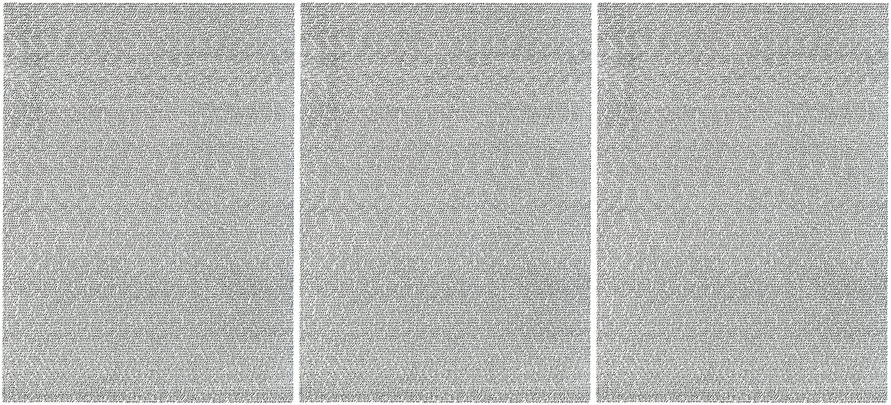
¬ Claudie Gallay, Détails d'Opalka
J’ai acheté un livre, Cahiers intempestifs n° 2, daté de 1993 et tiré à 1000 exemplaires. À l’intérieur, une lithographie d’une Carte de Voyage. Cette Carte commence par le nombre 1608287…
Claudie Gallay, Détails d'Opalka
¬ J’ai acheté un livre, Cahiers intempestifs n° 2, daté de 1993 et tiré à 1000 exemplaires. À l’intérieur, une lithographie d’une Carte de Voyage. Cette Carte commence par le nombre 1608287 et se termine par 1611451. Les nombres sont écrits à la plume et à l’encre noire, on dirait les gravures qui recouvrent les parois de certains anciens tombeaux. “Quand je peins, dit Opalka, je ne pense pas aux nombres, comme un marcheur ne pense pas à ses pas. Je peins la durée.” Aucune indication sur l’endroit où il se trouvait quand il a rempli cette Carte, ni en quelle année c’était. Forcément après 1972 (l’année du passage du million) et avant 1990 (date de la dernière Carte). Opalka ne datait pas ses Détails ni ses autoportraits, il les nommait par les nombres atteints. Je me penche sur la Carte et je cherche des erreurs, en partant du début, j’en trouve une première, rapidement, dès la deuxième ligne, Opalka a écrit 1608320 et tout de suite après 1608301. Il a vu sa faute, n’a pas raturé mais a réécrit le nombre à partir duquel il s’était trompé, 1608320 et il a continué en se corrigeant, 1608321, etc. Je poursuis ma recherche, la feuille sous la lumière de la lampe. Opalka n’est pas un automate qui compte, des erreurs, il en a fait d’autres. 1608351 1608358 1608351 1608788 16087885 1608784 1608788
Chaque fois, il reprend au nombre qui précède son erreur. 1608801 1608809 1608801 1608973 16089732 1608973 1609329 1609331 1609329
Plus loin, les nombres 1609386, 1609499 et 1610125 sont écrits deux fois. Il ne les a pas barrés. Il aurait pu le faire mais il se refusait à effacer, les erreurs devaient rester visibles, des preuves de ce qui avait été fait, les traces d’une émotion, d’un moment irréversible. 1609502 1609502 1609504 1609502
L’œuvre d’Opalka, c’est de la vie, il ne revient pas en arrière, il ne recommence rien, il avance avec ses erreurs et il continue. En milieu de Carte, il passe de 1609741 à 1609745, trois nombres sont oubliés, une erreur qu’il ne voit pas, ne corrige pas. Cette exposition aux erreurs le rend plus proche, plus humain. Je poursuis la lecture en m’aidant d’une règle. Même avec la lampe qui éclaire la Carte, l’exercice est difficile. Plus loin, une inversion de chiffre doublée d’une erreur : 1610077 160178 1610077 1610078
Un saut de nombre : 1610201 1610203 1610201 1610221 1610227 1610221
Presque à la fin, le nombre 1611299 est écrit deux fois. Suivent plusieurs erreurs très rapprochées, dues à la fatigue sans doute ou à l’impatience d’arriver au bas de la Carte ou au prochain nombre-passage. 1610557 1610556 1610557 1611094 16110957 16110956 1611095 1611310 1611331 1611310
À l’avant-dernière ligne, des nombres sautés, erreur non corrigée : 1611421 1611428 1161429
Sur la même ligne, une dernière erreur, corrigée : 1611432, 1643 1611432
Claudie Gallay, Détails d'Opalka, pages 99-102, à propos des Cahiers intempestifs n°2, mars 2018, Babel.
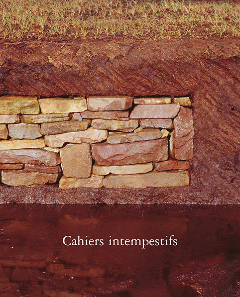
¬ Christian Garcin, Du Baïkal au Gobi
Ma maison n’est pas une yourte, mais j’ai aussi un autel domestique, et même deux. Et même trois. Les divinités tutélaires qui y trônent n’en sont pas vraiment toutes : certaines sont des clins d’œil, d’autres ne sont que décoratrices…
Christian Garcin, Du Baïkal au Gobi
Ma maison n’est pas une yourte, mais j’ai aussi un autel domestique, et même deux. Et même trois. Les divinités tutélaires qui y trônent n’en sont pas vraiment toutes : certaines sont des clins d’œil, d’autres ne sont que décoratrices. D’autres enfin ne suscitent aucune génuflexion de ma part, mais j’aime les avoir sous les yeux.
Sur le premier de ces autels, un meuble à bouteilles dans le salon, on trouve : un buste de Mao acheté à Shanghai ; une boîte d’allumettes avec le visage d’Egon Schiele, provenant du musée qui lui est consacré à Cesky Krumlov, en Bohème ; une photo de Karl Marx achetée à Trier, dans sa maison natale ; une photo du film Stalker, d’Andreï Tarkovski ; une carte postale achetée à Padoue et représentant Saint Antoine dans une attitude exagérément compassée ; une boîte de pétards grecque, représentant de manière assez incongrue Peter Pan devant l’Acropole ; un ticket d’entrée au Pravy Cirkus Berousek, qui planta son chapiteau dans la petite ville de Tabor du 16 au 19 août 2004 ; la photo un peu floue de Rimbaud en Éthiopie, accoudé à un bastingage ; un pin’s représentant Lénine enfant ; un autre glorifiant la Révolution de 1917 (je m’aperçois que c’est un autel quelque peu thématique), tous deux achetés dans un petit marché entre Irkoutsk et Listvianka ; un numéro, posé droit, de la revue « Les Cahiers intempestifs », dont la couverture est un beau mur ocre de pierres sèches ; juste au-dessous, la photo prise par moi dans les Alpes d’un autre mur, très similaire, sur lequel sont gravés les nom et prénom de mon grand-père qui gardait les chèvres à cet endroit ; quatre edelweiss cueillis en Mongolie…
Christian Garcin, Du Baïkal au Gobi, page 100, l’Escampette éditions, 2008.
¬ Valentine Oncins, Le dessin et le livre
Pas de points d’exclamation ni de secrets pour désigner les Cahiers intempestifs. Ils sont avant tout une turbulence artistique qui tient de la sculpture par leur emballage – plexiglas –, du livre d’artiste par leurs feuillets, libres de toute reliure, et du bloc de peinture qui s’échappe de ses limites, de ses bords.
Valentine Oncins, Le dessin et le livre
Pas de points d’exclamation ni de secrets pour désigner les Cahiers intempestifs. Ils sont avant tout une turbulence artistique qui tient de la sculpture par leur emballage – plexiglas –, du livre d’artiste par leurs feuillets, libres de toute reliure, et du bloc de peinture qui s’échappe de ses limites, de ses bords. Si pour Mallarmé, le livre est une « expansion totale de la lettre », les Cahiers intempestifs apparaissent, quant à eux, en expansion de tout signe, de toute couleur, de tout mot. Ils provoquent et créent la réflexion en accéléré. Tout saute aux yeux et virevolte. Comme un défilé de haute couture où l’art du détail, l’invention et la fabrication s’entremêlent dans un tournoiement et des pauses qui permettent au regard de déceler la virtuosité d’une œuvre à part entière. Les Cahiers intempestifs se tiennent sur le fil du paradoxe entre la tradition (code du livre bibliophile) et la modernité (éclats de pages, montage de séquences). On s’y promène comme dans un Musée Imaginaire, au milieu de titres qui laissent songeur : « La sérénité ne peut être atteinte que par un esprit désespéré », « La voix qui a manqué, celle qui doit parler » ou « Le dernier Homme », et d’œuvres d’art qui s’exposent sous la forme de livres…
Valentine Oncins, Le dessin et le livre.
¬ Art de la pause, Jacquie Barral, « Lieux de pause du livre : Cahiers intempestifs », Publications de l’université de Saint-Étienne, novembre 2012.
¬ Le dessin et le livre, Valentine Oncins « L’échappée belle des Cahiers intempestifs » et « Un jeu de mots proposés par Valentine Oncins à Véronique Gay-Rosier », Publications de l'université de Saint-Étienne, novembre 2009.
Macguffins
¬ Abandonner ses battements de cœur sur une île japonaise
Participation à l’œuvre de Christian Boltanski Les Archives du cœur à teshima. N° 21001
34'' 38' N 134'' 10' E
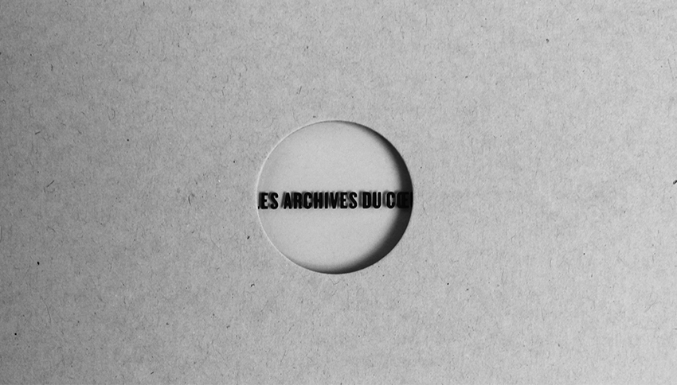
¬ Chasser les lions dans les montagnes d’Écosse
Lady of Glencoe : propriétaire d’1 pied carré dans une réserve naturelle des highlands.
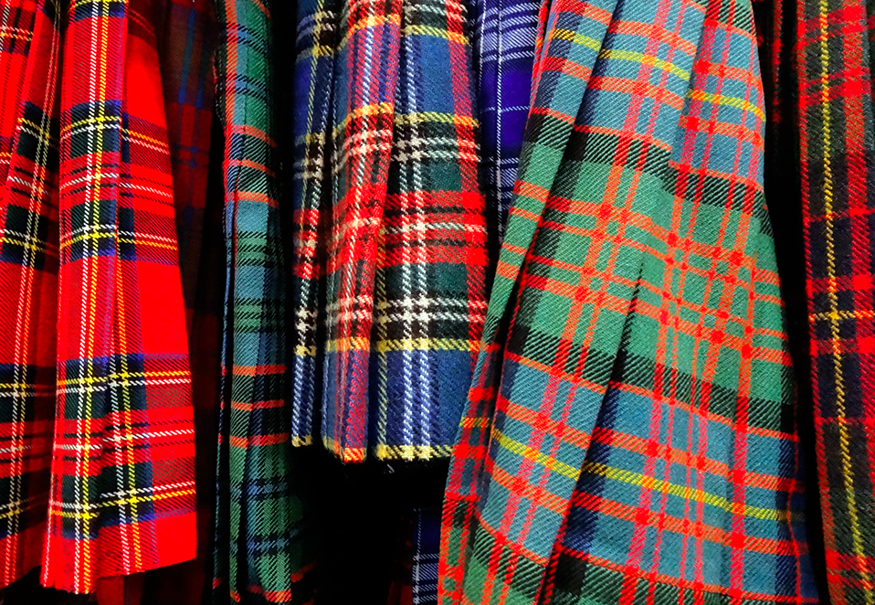
¬ Tourner dans Le pays des tigres disparus
Réalisation d’un documentaire sur le microcrédit au Cambodge.
Revenir au Sommaire